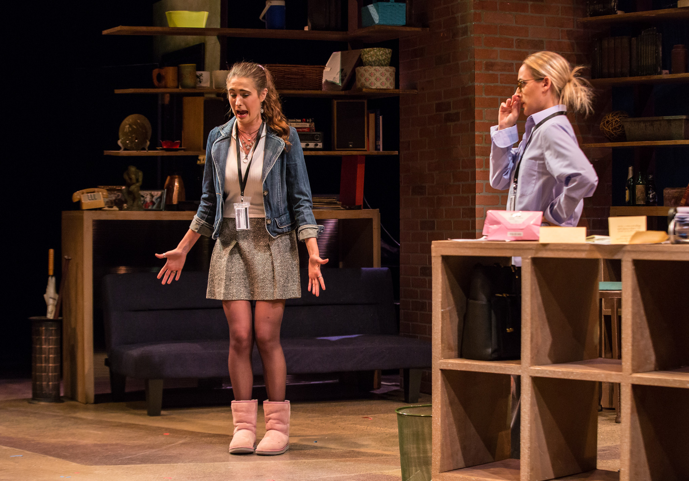
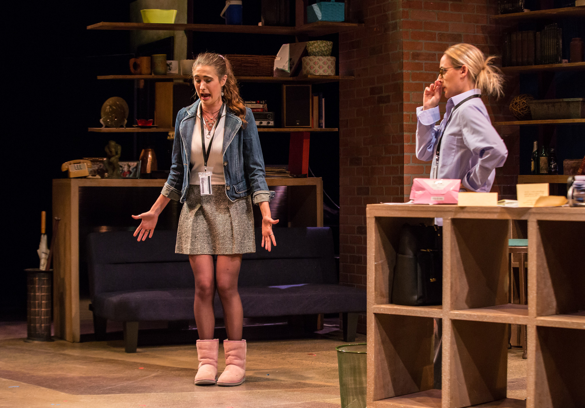

Headshots
BIO
Mackenzie Roberts is receiving her BFA in Musical Theatre from the University of Miami,
and is expected to graduate in May of 2021. Her previous credits at the University include
Helen in The Trojan Women, Masha in The
Fairytale
Lives of Russian Girls, Doris in Saint Sanitas,
and Harriet in Boy Gets Girl. Aside from the University she has portrayed The Baker’s Wife in
Into the Woods, Gertrude in Seussical, Rosie in Bye
Bye
Birdie, and Peter Quince/Cobweb in
A Midsummer’s Night Dream. After graduating Mackenzie plans to move directly
to New York City and begin pursuing a career in acting.
Resume
Production Stills

 
